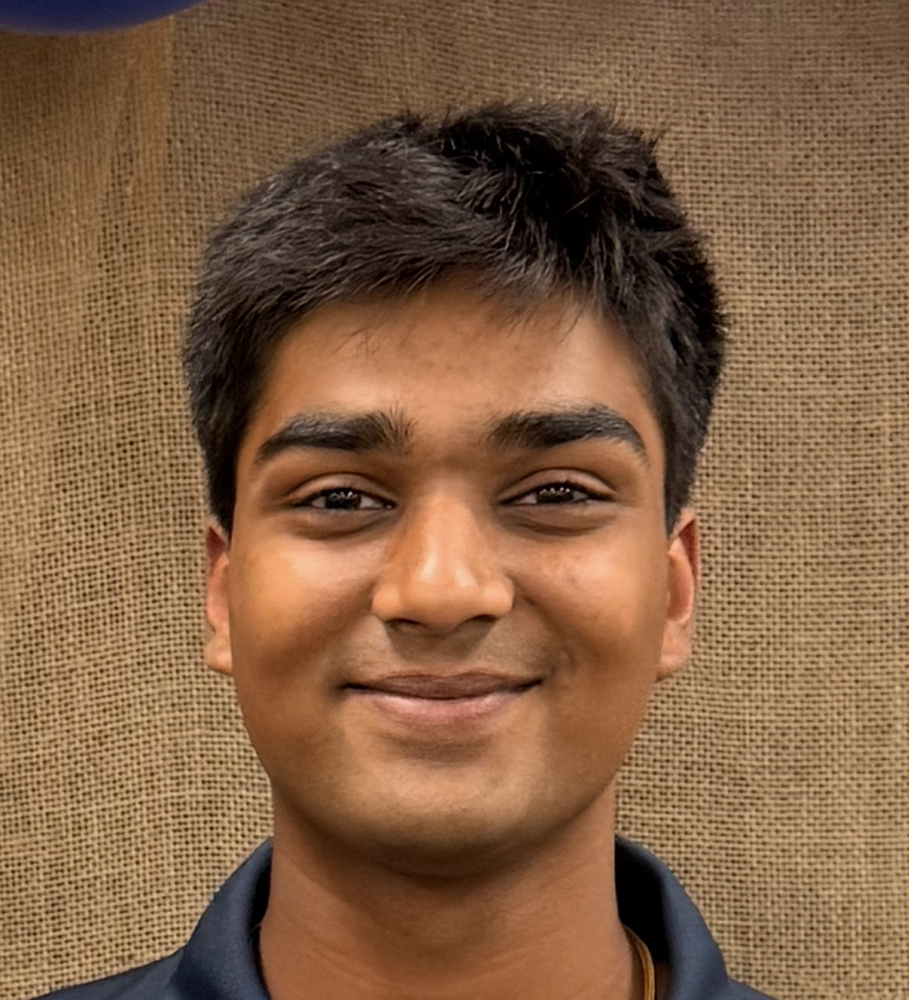

Welcome
Welcome to my eportfolio. I am a first-year undergraduate student majoring in electrical engineering at the Georgia Institute of Technology. This portal serves as a comprehensive central repository for my academic journey, technical milestones, hardware prototyping initiatives, hands-on laboratory experiences, and long-term professional aspirations in embedded systems and electrical design. Throughout my academic career, I am committed to bridging theoretical classroom concepts with tangible, physical engineering solutions that address real-world challenges.

Pitch
"Hi, I'm Yog Patel, a first-year Electrical Engineering student at the Georgia Institute of Technology specializing in embedded systems and hardware integration. I combine rigorous academic coursework with hands-on prototyping—from programming microcontrollers and designing custom 3D-printed enclosures to routing circuit boards. I am actively seeking engineering internship opportunities for Summer 2027 where I can apply my analytical problem-solving and technical skill set to build robust, real-world hardware solutions."
About Me
My fascination with how physical systems interface with computation began long before entering college, driven by an innate, persistent curiosity for taking apart electronics, examining circuit boards, and understanding their foundational electrical topologies. Growing up with a deeply analytical mindset, I gravitated naturally toward advanced mathematics, physical sciences, and mechanical tinkering, ultimately cementing my decision to pursue a rigorous Bachelor of Science in Electrical Engineering at the Georgia Institute of Technology.
Outside of formal lectures and structured coursework, I heavily immerse myself in hands-on building and rapid prototyping. Whether I am routing custom Printed Circuit Boards (PCBs) in schematic capture software, designing precision physical enclosures using CAD tools, or programming microcontrollers using C++ and Python, I thrive directly at the intersection of robust hardware engineering and functional software logic. My core approach to technical design is heavily influenced by industrial design philosophies—believing fundamentally that high-performance technology must also be intuitive, structurally sound, and meticulously optimized for the end user.
Furthermore, my background has instilled in me a strong sense of leadership, project management, and collaborative execution. From directing large community initiatives and managing high-volume inventory systems to modernizing enterprise workstations, I bring a structured, disciplined work ethic to every engineering team I join. I am continually seeking out environments that challenge my technical boundaries, foster creative problem-solving, and provide mentorship from experienced industry professionals.
Career Goals & Academic Roadmap
My long-term professional aspiration is to establish a high-impact career as an embedded systems and hardware integration engineer, designing mission-critical electronic hardware that seamlessly bridges physical sensor layers with intelligent computing architectures. To successfully achieve this objective, I have mapped out a deliberate, rigorous academic and experiential strategy through my undergraduate tenure at the Georgia Institute of Technology:
- Foundation Building (First & Second Year): Master fundamental circuit analysis, semiconductor physics principles, digital logic design, and software development workflows via core ECE coursework, C++, and Python. Actively utilize campus makerspaces such as the Hive and Invention Studio to build practical soldering, schematic capture, and layout competence.
- Practical Application (Third Year): Secure a high-impact co-op or engineering internship in embedded hardware design, power electronics, or automotive electronics systems, translating theoretical classroom knowledge into production-grade industrial projects and gaining direct mentorship.
- Specialization & Capstone (Fourth Year): Complete advanced technical electives focusing on microcontroller architectures, power conversion systems, and signal processing, culminating in an industry-sponsored capstone design project that showcases comprehensive systems-level engineering execution.
Resume
You can view a summary of my qualifications below, or download my official ECE recruiting resume using the button provided.
Download Full Resume (PDF)Overview of Qualifications
Yog P. Patel
211 Charlton St Nahunta, GA 31553 | 912-286-7927 | ypatel347@gatech.edu | U.S. Citizen
Objective
Ambitious Georgia Tech engineering student and proven leader combining direct programming (Python, VEXcode) with manufacturing and systems experience (G-Code CNC, digital system migration). Seeking an engineering internship starting Summer 2027 that provides hands-on technical experience and structured mentorship.
Education
Georgia Institute of Technology | Atlanta, GA (August 2026–Present)
Bachelor of Science in Electrical Engineering
Brantley County High School | Nahunta, GA (August 2022–May 2026)
Transfer with 27 Credit Hours, GPA 4.00
Core Technical Skills
- Programming & Hardware: Python, VEXcode/ROBOTC (VEX Robotics), G-Code (CNC Milling), Microcontroller Interfacing
- Software & Platforms: Windows, macOS, Blender, Autodesk Fusion 360, Microsoft Office 365, Google Workspace, Canva
- Professional Organizations: Georgia Tech Ramblin' Rocketry Club
- Languages: English (fluent), Gujarati (intermediate), Hindi (beginner)
Professional Experience
- Hospice Satilla (Volunteer, Aug 2024–Current): Organize community outreach events engaging 200+ participants per event; shaped shift communication for a core team of 10+ volunteers during fast-paced community campaigns.
- Coastal Pines Technical College (Intern, June 2024–July 2024): Modernized institutional hardware by executing system updates and software patches across campus workstations; completed 40+ hours of employability training in project management methodologies.
- Golden Isle Souvenirs (Convenience Store Associate, Mar 2024–Aug 2026): Managed inventory control for 1,500+ SKUs; facilitated store-wide transition to a new digital POS and inventory system migrating data for 500+ categories.
Leadership & Extracurriculars
BETA Club (President, Aug 2025–May 2026): Directed strategic vision and executive meetings for a chapter of 200+ student members; orchestrated 4 major service initiatives generating 3,500+ collective hours of community support.